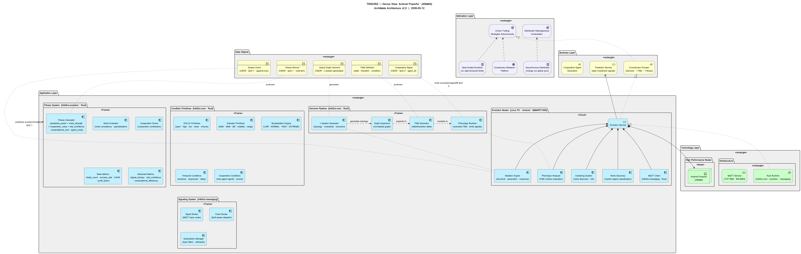

TR4D3RZ — Interactive ArchiMate Device View · Click any element for details
| Active Structure | Behavior | Passive Structure | Motivation | |
|---|---|---|---|---|
| Motivation Layer |
Evolve Trading
Strategies Autonomously Distributed Heterogeneous
Computation Open-Ended Evolution
(no rigid structural limits) Asynchronous Distributed
Ecology (no global sync) Evolutionary Research
Platform |
|||
| Business Layer |
Evolutionary Process
(Genome → FSM → Fitness) Cooperative Signal
Generation Prediction Service
(daily investment signals) |
Hybrid Graph Genome
(CBOR · L-System generated) FSM Definition
(state · transition · condition) Cooperative Signal
(CBOR · QoS 0 · agent_id) Fitness Record
(CBOR · QoS 1 · multi-dim) System Event
(CBOR · QoS 1 · append-only) |
||
| Application Layer |
Mutation Engine
(structural · parametric · crossover) Clustering System
(niche discovery · GA) Niche Discovery
(market regime classification) Phenotype Analyzer
(FSM runtime evaluation) MQTT Client
(tr4d3rz-messaging · Rust) L-System Generator
(topology · modularity · recursion) Graph Expansion
(normalized graph) FSM Generator
(state/transition table) Phenotype Runtime
(executes FSM · emits signals) OHLCV Primitives
(open · high · low · close · volume) Indicator Primitives
(EMA · SMA · IIR · volatility · range) Bucketization Engine
(LOW · NORMAL · HIGH · EXTREME) Temporal Conditions
(windows · sequences · delay) Cooperative Conditions
(inter-agent signals · events) Fitness Calculator
(predictive_power + niche_strength + cooperation_value + stat_confidence - computational_cost - signal_noise) Niche Evaluator
(niche consistency · specialization) Cooperation Scorer
(cooperation contribution) Base Metrics
(trade_count · success_rate · CAGR · profit_factor) Advanced Metrics
(signal_entropy · stat_confidence · computational_efficiency) Signal Broker
(MQTT topic router) Event Router
(QoS-aware dispatch) Subscription Manager
(topic filters · wildcards) |
Evolution Service
|
||
| Technology Layer |
Android Powerful
(ARM64) Rust Runtime
(tr4d3rz-core · evolution · messaging) |
MQTT Service
(TCP:1883 · WS:8083) |
